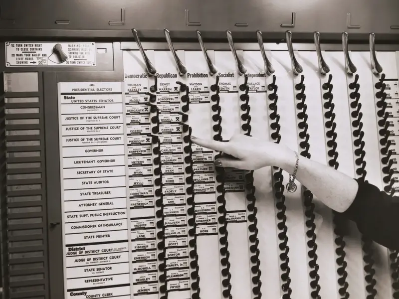
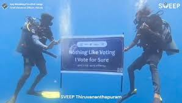

Presidential Election Day in the United States is a major civic event held every four years. It marks a time when Americans exercise their democratic right to vote for the President, reflecting the principles of democracy.
Presidential Election Day in the United States is a major civic event held every four years. It marks a time when Americans exercise their democratic right to vote for the President, reflecting the principles of democracy.
The tradition of holding elections on the first Tuesday after the first Monday in November was established in 1845. This date was chosen to accommodate rural farmers who needed to travel to polling stations after the harvest.
 Americans can vote in person at polling stations or by mail. Each states votes contribute to the Electoral College, a system that ultimately determines the winner.
Americans can vote in person at polling stations or by mail. Each states votes contribute to the Electoral College, a system that ultimately determines the winner.
is a way for citizens to have a say in their government. Each vote counts, and its through this collective decision-making that leaders are chosen to represent the public's values and interests.